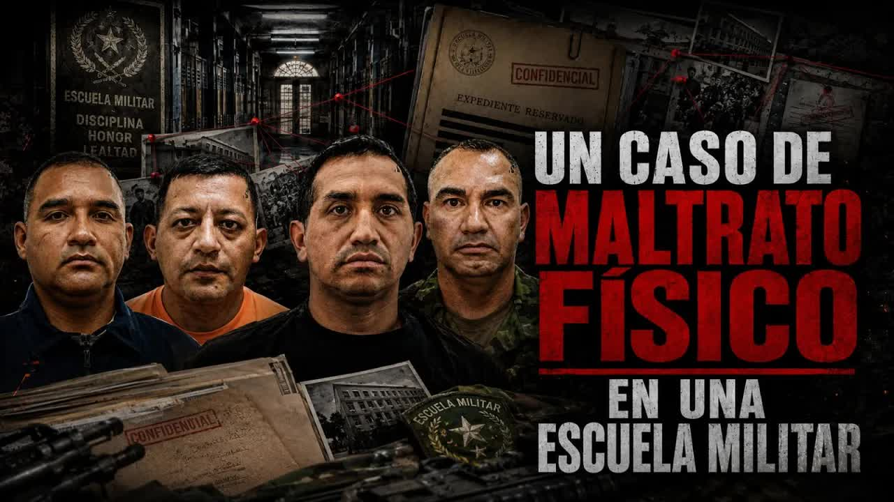
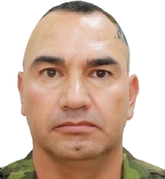
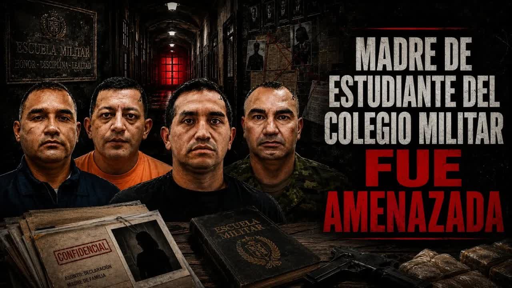

Aug 27 · The military hold and the threats
A sergeant at the Miguel Iturralde Military School in Portoviejo put a 17-year-old student in a neck hold and had him thrown into the mud. When the mother filed a complaint, the principal asked her to keep quiet, and death threats arrived with a copy of her national ID card that only the school had. After the story was published, Ochoa and the principal were removed from their posts, and the National Assembly and two ministries opened investigations.
Copy with the same printing error as the one in the school's file

The student is 17, in his final year of high school and about to graduate from Military School No. 7 Miguel Iturralde, in Portoviejo, Manabí. His mother enrolled him there because she wanted a disciplined education, and she is used to the academy's strictness: cleaning, exercising, following orders. The boy has a medical condition: if he touches muddy surfaces, his skin breaks out severely. That is why he had a medical certificate excusing him from those activities.
On July 11, 2026, he was told to do an activity involving mud. He refused. According to the complaint filed with the authorities by the school psychologist and the mother, and according to accounts from his classmates that the show heard, Sergeant Ochoa, 45, yanked him by the arm, took him to the ground and put him in a military neck hold to restrict his movement, until the student could no longer call for help. He then forced other students to hold him down and carry him, and together they threw him into the mud while hitting him. The student was left with physical injuries and damaged belongings. A medical report from those same days recorded injuries, physical signs and the allergic reaction.
It's a more or less typical military school case, of a brute who has slipped onto the teaching staff and who thinks that at a military school you don't just have to impose discipline, but also hand out beatings and military holds to minors.
Andersson Boscán, August 27, 2026
The mother's complaint names Sergeant Ochoa, Sergeant Lara and other instructors for alleged physical violence. Boscán showed Ochoa's face and name on air. In his view, the assault alone would not have made it to the show. What turned it into a case was what came next.

After the complaint was filed, someone from the school spoke to the mother. They offered to handle the paperwork to transfer her son to another school, because he was blacklisted. Blacklisted, as they explained to her, meant they would not let him graduate from the military academy. The student who had been assaulted became the problem for having complained to his mother.
Take your son, we'll do the paperwork so you can move him to another school, because your son is blacklisted.
Message from the school to the mother, as recounted by Andersson Boscán on air, August 27, 2026

The school's principal, Carlos Guerrero Escobar, asked the mother not to file the complaint, so everything could go on as if nothing had happened. And he threatened her: she had better not think of recording him. Boscán showed his photo and name on air and asked him to explain to the education authorities why he was protecting someone who beats his students.
On July 17, 2026, at 11:32 p.m., the mother began receiving messages and calls. The person writing claimed to belong to an organized crime group, threatened her with death, demanded an answer and warned her not to block them. They told her she talked too much, insulted her and pressured her to leave the area. There were also voice recordings.
To show her they knew where she lived, they sent her photos of her ID card and her son's. The image had a flaw: in the surname, two letters were stuck together because of a printing error. It was not the original card, it was a copy. The copy in the school's file has exactly the same error in the same place. Boscán put the two images side by side.
These people took the mother's and the minor's personal information from a copy. It turns out the copy on file at the school is incredibly similar, because it has exactly the same printing error.
Andersson Boscán, August 27, 2026
The mother suspects that a military officer with access to her son's file handed over the data. She and the student left Portoviejo and live in another city. They fear that if the boy goes back to school, something worse could happen. Boscán summed it up this way: the mother reports that her son was put in a chokehold and ends up driven out of her city, harassed by people who used information only the school had, with no authority to turn to.
On August 27, 2026, Andersson Boscán presented the case on the show, with the names and photos of Sergeant Ochoa and Principal Guerrero Escobar. He called on the Education Ministry to act and noted that those involved are fully identified, including the principal, who chose to protect the instructors instead of the students.
The next day he described the reaction. Sergeant Ochoa asked people close to him to comment on the video in his defense and to report it on the platform. And that morning, at the school, the students were gathered together. One student recorded it: first the whole school was told that a Venezuelan journalist was telling lies and that they should not believe what they saw on social media; then only the final-year students were gathered.
He told us that tomorrow a committee is coming from Quito and people from the Education Ministry are coming too, and that they were going to ask us about what happened that day. That we shouldn't talk without authorization from our parents or guardians, and that if we talk they're going to make a list of everyone who talked.
Final-year student, recording played by Andersson Boscán on August 28, 2026
Boscán reproached Principal Guerrero Escobar directly: going to minors, one day before the investigative commission, to threaten the witnesses. He asked the students not to be afraid and to record everything, and asked the Defense and Education ministries to take note. He made clear that he has nothing against the Armed Forces, where he has friends he considers honest people.
Breaking the law is putting a minor in a military hold. Breaking the law is a principal getting ahead of an investigative commission to threaten the witnesses. Breaking the law is sending extortion messages to a mother.
Andersson Boscán, August 28, 2026

The student refuses a mud exercise because of his medical certificate. Sergeant Ochoa throws him to the ground, puts him in a military neck hold and has his classmates throw him into the mud while they hit him.
The school psychologist and the mother file the complaint. A medical report records injuries, physical signs and the allergic reaction.
Someone from the school tells the mother to take her son elsewhere because he is blacklisted and will not be allowed to graduate. Principal Carlos Guerrero Escobar asks her not to file the complaint and warns her not to record him.
The school offers to handle the student's transfer to another school. No known sanction against the instructors.
Messages and calls in the name of an organized crime group: death threats, insults and photos of the mother's ID card and her son's. The copy has the same printing error as the one in the school's file.
No response. The mother suspects that a military officer with access to the file handed over the data; there is no statement on record from the school.
Mother and son leave Portoviejo and settle in another city. They fear that if the boy goes back to school, something worse could happen.
No response. No authority to turn to, according to the show's account.
The day after the show, the school gathers the final-year students: the video is a lie, don't talk to the commission without authorization from your parents or guardians, anyone who talks goes on a list. A student records it.
The arrival of a committee from Quito and from the Education Ministry is announced. The principal does not respond publicly.
Military School No. 7 Miguel Iturralde · Portoviejo, Manabí
The student refuses a mud exercise. Sergeant Ochoa throws him to the ground, puts him in a neck hold and has his classmates throw him into the mud.
The mother files a complaint. So does the school psychologist. A medical report records injuries and the allergic reaction.
The school offers the mother the paperwork to transfer her son to another school. The principal asks her not to file a complaint and warns her not to record him.
At 11:32 p.m., death threats arrive by message and phone in the name of a criminal group, with copies of the mother's and son's ID cards.
Mother and son leave their city and settle in another.
Boscán & La Moni present the case with the names of Sergeant Ochoa and Principal Carlos Guerrero Escobar.
At the school the students are gathered: the video is a lie, don't talk to the commission, anyone who talks goes on a list. A student records it.
The arrival of a committee from Quito and from the Education Ministry is announced, to ask about what happened.
Instructor at the Miguel Iturralde Military School, 45. Applied the military hold and ordered the student thrown into the mud, according to the complaint.
Instructor at the school, named in the complaint for alleged physical violence.
Principal of Military School No. 7 Miguel Iturralde. Asked the mother not to file a complaint and warned her not to record him.
Reported the assault and the threats. Wrote to Mónica Velásquez.
Boscán asked it to intervene. The school announced the arrival of its commission.
According to the mother, he asked her not to file the complaint and warned her not to record him. According to a student's recording played on August 28, 2026, students at the school were told that the video contained lies by a Venezuelan journalist and that anyone who talked to the commission would go on a list. No public response from the principal appears in the videos.
Asked people close to him to comment on the video in his defense and to report it on the platform, according to Boscán on August 28, 2026.
Offered the mother the paperwork to move her son to another school because he was blacklisted. No official statement from the school appears in the videos.
I send my regards to the principal, who is such a tough guy when it comes to threatening a mother, telling her she'd better not think of recording him. And I'd love to tell you, Mr. Principal, that I hope you can explain to the education authorities why the [ __ ] you protect people who beat your students. The young man's name is [name withheld] and he studies at the Miguel Iturralde Military Academy. He's in the third year o…
Read the full transcriptI love that they're such tough guys when it comes to terrorizing a mother who had to leave her city. Do you have any idea how insane this is? You go to the school, you say, "They've beaten my son, and you get death threat messages. you have to leave your city because it turns out you're afraid the military will kill you. My sergeant Choa asked me the same thing, to leave their comment on the video saying how the impli…
Read the full transcriptTranscripts from each show's automatic captions. They have not been corrected by hand: use them to find a phrase and jump to the exact minute in the video, not as verbatim quotes.
Boscán & La Moni publish the case with the accounts of the mother and the student.
The school gathered the students to ask them not to talk to the Education Ministry commission.
Sergeant Ochoa and the school's principal were removed from their posts.
The Committee for the Comprehensive Protection of Children and Adolescents opened an investigation into the case.
Education and Defense set up an inter-agency commission to review the school's disciplinary regime.
The events took place in July 2026 ("this year," according to the show), not in 2007. Miguel Iturralde is the name of Military School No. 7 in Portoviejo, not a person in the case. The student is a minor and is not identified: his name, his face and images of the assault are not published. The mother's surname, visible on her ID card, is withheld. The surname of the accused staff sergeant and the name of the Education Minister cannot be made out in the audio and are omitted.